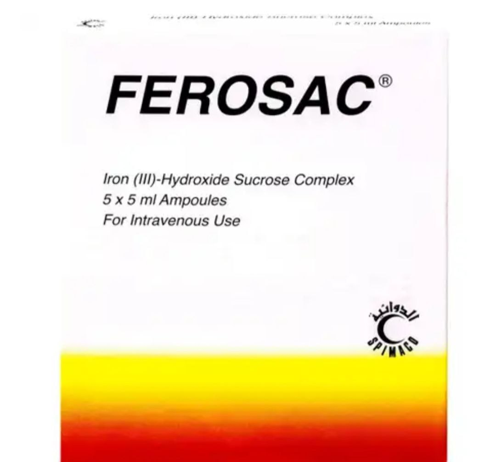

[feroglobin]:الاسم التجاري

أو فيروساك
[ferosac]:الاسم التجاري

لتعويض نقص الحديد.
1. التعب والإرهاق: بسبب نقص الأكسجين في الأنسجة.
2. شحوب الجلد: خاصة في الوجه والأظافر.
3. ضيق التنفس: خاصة عند بذل مجهود.
4. الدوخة أو الدوار: بسبب نقص تدفق الأكسجين إلى الدماغ.
5. الصداع: نتيجة نقص الأكسجين.
6. برودة الأطراف: بسبب ضعف الدورة الدموية.
7. تسارع ضربات القلب: كتعويض عن نقص الأكسجين.
8. ضعف التركيز: بسبب نقص الطاقة.
1. نقص الحديد: أكثر الأسباب شيوعًا، خاصة عند النساء بسبب الدورة الشهرية أو الحمل.
2. نقص فيتامين B12 أو حمض الفوليك: يؤثر على إنتاج خلايا الدم الحمراء.
3. الأمراض المزمنة: مثل أمراض الكلى أو السرطان.
4. النزيف: بسبب القرحة أو الإصابات أو الدورة الشهرية الغزيرة.
5. اضطرابات نخاع العظم: مثل اللوكيميا أو التليف النخاعي.
6. الأمراض الوراثية: مثل التلاسيميا أو فقر الدم المنجلي.
1. الأدوية:
[feroglobin]:الاسم التجاري
[ferosac]:الاسم التجاري
[Amazon Pharmacy]:المصدر
[Amazon Pharmacy]:المصدر
www.pharmacy.amazon.com

[Amazon Pharmacy]:المصدر
www.pharmacy.amazon.com

[Amazon Pharmacy]:المصدر
www.pharmacy.amazon.com
[Amazon Pharmacy]:المصدر
www.pharmacy.amazon.com
2. العلاج الغذائي:
3. العلاج الطبي:
1. الصيدليات: متوفرة بوصفة طبية أو بدون وصفة (حسب الدولة).
2. المستشفيات والعيادات: للحصول على حقن فيتامين B12 أو نقل الدم.
3. المراكز المتخصصة في أمراض الدم: لعلاج الحالات المعقدة مثل التلاسيميا أو فقر الدم المنجلي.
نصائح عامة: